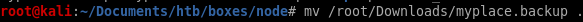
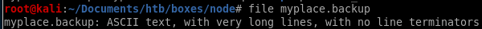
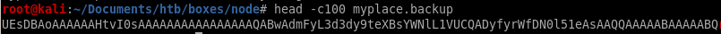
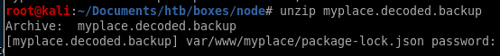

- nmap
- http
- initial foothold on mark
- privesc to Tom
- linEnum.sh
- escalation method 1: mongo_db rev shell
- escalating method 2: copy privileged shell (ippsec)
- privesc to root
- find / -perm -4000 2>/dev/null
- /usr/local/bin/backup
- badchars
- intended privesc- Buffer Overflow
- check for overflowed buffer
- pattern create
- python -c 'print "A"*520'
- buf.py
- find libc, system_off, exit_off and arg_off starting address
- update ret
- run buf.py win
- unintended privesc methods
- user/root
- lessons learned
backup download

first lets move the backup file to our node directory:

and check our what type of file it is:
file myplace.backup

file reports its ascii with very long lines, but lets take a look at the first 100 characters with the head command
head -c100 myplace.backup

it looks like base64, lets decode it and run file on myspace.backup again
cat myplace.backup | base64 -d > myplace.decoded.backup
file myplace.decoded.backup

and we see its a zip file! lets unzip it

its password protected, time to bust out the brute force tool fcrack